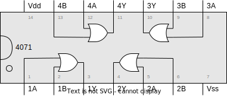

Licenca
To delo je na voljo pod pogoji slovenske licence Creative Commons 2.5:
priznanje avtorstva - nekomercialno - deljenje pod enakimi pogoji.
Celotna licenca je na voljo na spletu na naslovu http://creativecommons.org/licenses/by-nc-sa/2.5/si/. V skladu s to licenco je dovoljeno vsakemu uporabniku delo razmnoževati, distribuirati, javno priobčevati, dajati v najem in tudi predelovati, vendar samo v nekomercialne namene in ob pogoju, da navede avtorja oziroma avtorje in izdajatelja tega dela. Če uporabnik delo predela, kar pomeni, da ga spremeni, preoblikuje, prevede ali uporabi to delo v svojem delu, lahko predelavo dela ponudi na voljo le pod pogoji, ki so enaki pogojem iz te licence oziroma pod enako licenco.

Uporaba logičnih vrat
Zaradi priročnosti lahko več logičnih vrat (iste vrste) združimo v integrirano vezje (ang. integrated circuit), to je mikrovezje, sestavljeno iz množice elektronskih elementov, ki so na skupnem substratu iz polprevodniškega materiala med seboj povezani v električno vezje. Vezje vsebuje poleg aktivnih elementov (tranzistor, dioda ...) tudi pasivne elemente (upor, kondenzator ...).
Integrirano vezje se po izdelavi vgradi v ohišje in tej celoti pa pravimo čip (ang. chip). Beseda čip izhaja iz ameriškega računalniškega slenga in pomeni silicijevo rezino.Uporabili bomo čipe iz družine 4000, ki jih je v preteklosti proizvajalo precej podjetij – čipe iz te družine je leta 1968 začelo proizvajati podjetje RCA. V spodnji tabeli je seznam čipov, ki jih bomo uporabili:
| Oznaka | Opis | Tehnični list |
|---|---|---|
| 4001 | Štiri 2-vhodna NOR vrata | RCA, CD4001B, HEF4001B, MC14001B |
| 4011 | Štiri 2-vhodna NAND vrata | RCA, CD4011B, HEF4011B, MC14011B |
| 4049 | Šest NOT (inverter) vrat | RCA, CD4049UB, HEF4049B, MC14049B |
| 4070 | Štiri 2-vhodna XOR vrata | RCA, CD4070B, HEF4070B, MC14070B |
| 4071 | Štiri 2-vhodna OR vrata | RCA, CD4071B, HEF4071B, MC14071B |
| 4077 | Štiri 2-vhodna XNOR vrata | RCA, CD4077B, HEF4077B, MC14077B |
| 4081 | Štiri 2-vhodna AND vrata | RCA, CD4081B, HEF4081B, MC14081B |
Najprej si bomo ogledali le čipe, ki vsebujejo več istih logičnih vrat. Ogledali si bomo, kako čipe na preizkusni ploščici (ang. breadboard) s pomočjo žic povežemo z gumbi in diodo. S takim preprosim vezjem lahko nato preverimo delovanje posameznih logičnih vrat in preverimo, ali se ujema s teoretičnim znanjem, ki smo ga pridobili do sedaj.


